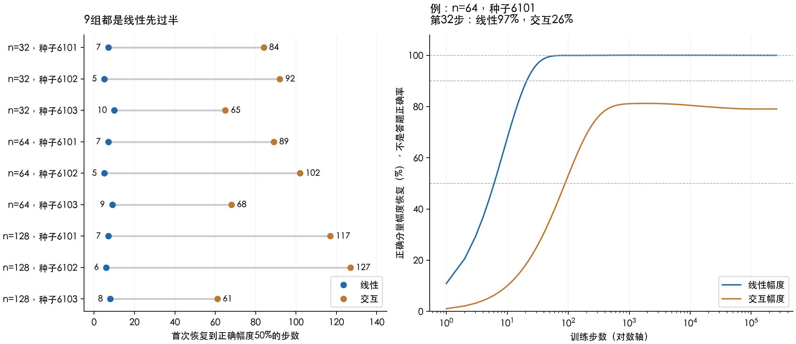
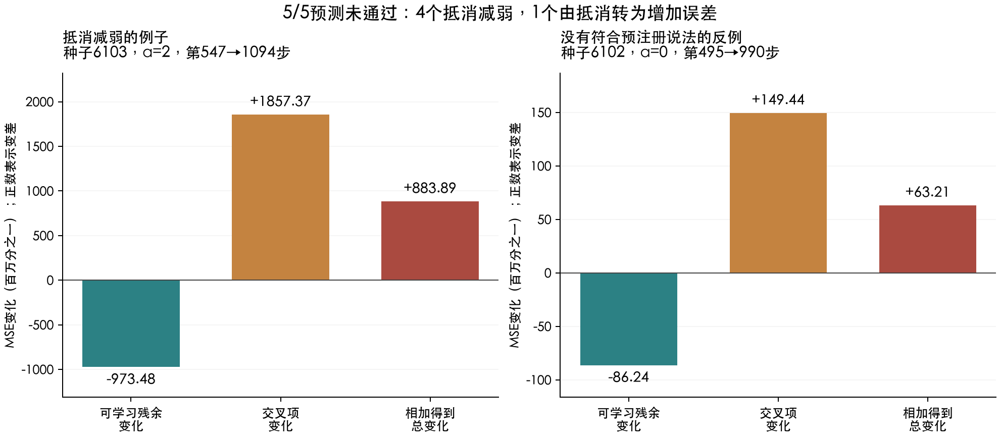
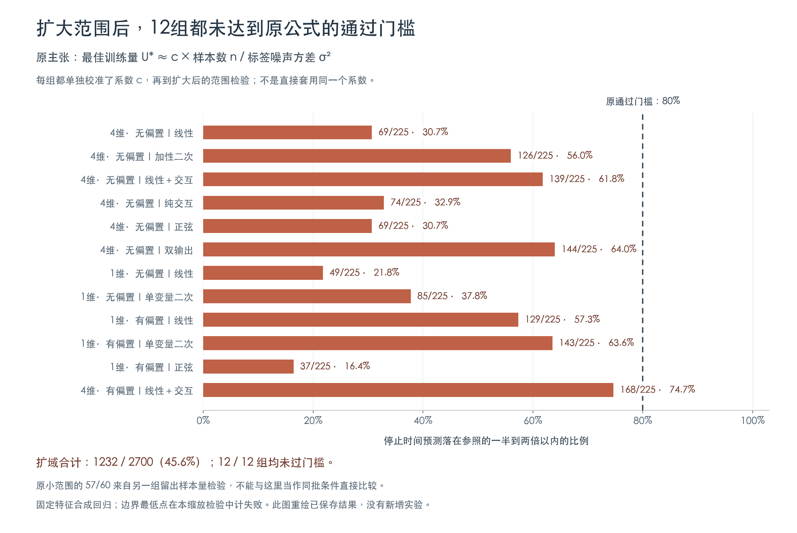
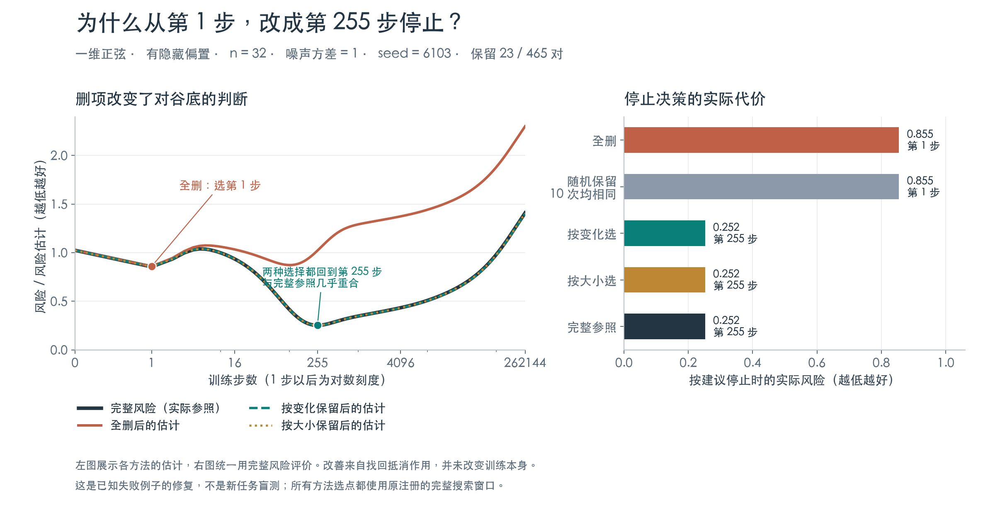
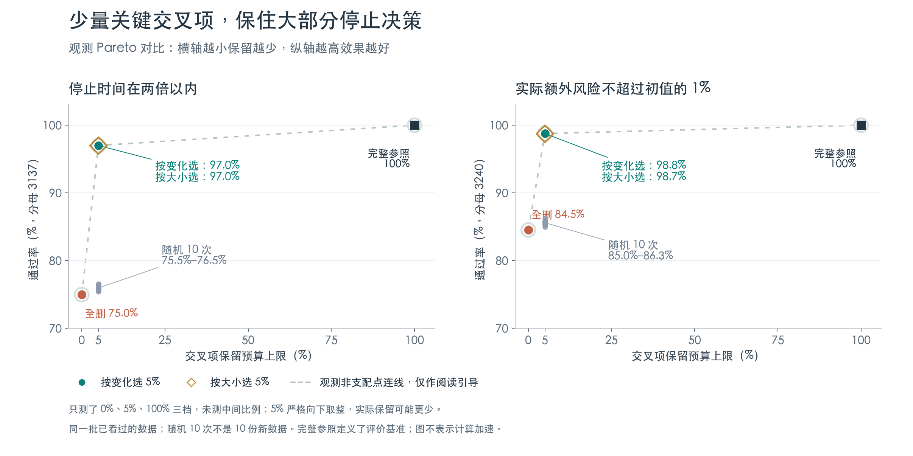

D2 · 泛化为什么变弱 · 证据更新于 2026-11-06
为什么越学，泛化反而越差？
模型在练习题上越来越熟练，换一批题却可能做得更差。这就是 D2 要解释的现象：训练误差继续下降，泛化误差却开始回升。
现在的发现是：答案没有噪声、模型也有能力表达答案，继续训练仍可能让新题做得更差。 我们正在从“模型先学什么、后学什么，以及不同错误如何抵消”理解这件事。
原先用样本数／噪声概括停止时间的广义公式已被反例推翻，历史证据保留在下方。阅读顺序：实验设定 → 排查过程 → 最新例子 → 误差抵消 → 历史结果与未决问题。本次只整理已有结果；同速对照暂缓，未启动。
手机上表格可左右滑动，点击图片可查看高清图。
先看全貌：学会训练题，为什么不等于学会规律？
训练误差衡量模型对用来学习的样本做得怎样；泛化误差关心它遇到新输入时是否仍然可靠。这里以预测和正确答案之差的平方平均值（MSE）记分，越低越好。验证集是用一批新输入估计泛化误差；在已知分布的当前实验里，还可以直接计算总体平均，减少验证样本波动的干扰。
训练标签可能混有随机错误，叫标签噪声。模型继续降低训练误差时，既可能更接近真实规律，也可能更贴近这些错误。因此，训练进步与泛化改善不是同一件事。噪声是候选原因之一，不能未经检查就把每一次回升都归因于它。
| 研究层面 | D2 要回答的问题 | 目前能说到哪里 |
|---|---|---|
| 现象 | 继续训练，验证误差会不会回升？ | 在已测固定特征回归中观察到了；不是每条曲线都在窗口内部出现最低点。 |
| 解释 | 回升来自拟合噪声，还是无噪声部分也在恶化？ | 无噪声也有回升；已有可表示目标干预、误差分解与学习先后测量，尚无普适因果解释。 |
| 预测 | 能否提前知道什么时候该停？ | 原简单比例公式外推失败；实用的仅依赖训练数据的方法尚未建立。 |
停止时间是这个现象的一种测量。本文寻找观察窗口内的最低误差位置，记为 $t_*$；它是格点搜索与局部精化的估计，不保证等于第一次局部回升的位置。
这次用什么模型，研究什么问题？
先把问题缩小到一个能逐项算清楚的模型：输入经过 128 个固定的 ReLU 特征，训练只调整输出层的组合权重，另加一个常数项。特征本身不学习，因此它不是端到端训练的大模型。
正确答案由两部分组成：线性是“第一个输入直接影响答案”；交互是“第一个输入的作用还取决于第二个输入”。例如 $x_0$ 与 $x_0x_1$。先保持数据和模型不变，只连续增加交互部分的比例。
| 设定 | 具体做法 | 为什么这样设计 |
|---|---|---|
| 目标 | $y=(x_0+\alpha x_0x_1)/\sqrt{1+\alpha^2}$ | 从纯线性到更多交互，保持总体答案的均方大小为 1，避免只是在比较答案大小。 |
| 输入与样本 | 4 维标准高斯；样本数 32、64、128；3 个主种子 | 复用同一批输入、特征和初始化，比较目标改变的影响；共 9 组数据设置。 |
| 训练 | 零初始化、全批量 MSE、统一学习率 0.3 | 没有人为给线性与交互设不同学习率。固定特征允许解析复算轨迹，并用直接梯度下降核验。 |
| 评价 | 先用独立验证样本，再用已知高斯分布计算总体 MSE | 区分真正变差与有限验证集的波动。解析评价依赖已知分布和干净答案，尚不是实用预测器。 |
这些都是已看过的开发条件，9 组只有 3 个主种子，样本量还存在嵌套。增加条件数量不等于增加独立任务，也不构成对深度网络的泛化验证。
六轮实验，把哪些解释排查清楚了？
下面是一条连续的排查过程，每一行的分母都说明“在检查谁”，不能把不同轮次的通过率直接比较。
| 问题与做法 | 实测结果 | 可以得出的结论 |
|---|---|---|
| ① 是噪声压过了收益吗？ 改变目标混合比例和噪声，拆分误差 | 324 个条件中，正噪声 270 个；267 个内部最低点到两倍步数的区间，噪声代价都超过无噪声收益，另 3 个最低点在起点。 | 这批带噪区间符合噪声代价超过收益的解释；但不能据此解释所有情况。 |
| ② 没有噪声的回升，会不会只是验证集偶然？ 冻结两时刻的模型，用新输入再评价 | 54 个无噪声条件中，51 对模型可比较，另 3 个最低点在窗口末端。用 131072 个新输入，44/51 明确回升，7/51 待定。 | 多数回升不是只出现在旧验证集；新输入用于评价，没有重新训练。 |
| ③ 不靠有限验证集，真实总体误差呢？ 对同一批模型计算高斯总体风险 | 同样 51 对模型中，50 对上升、1 对下降；另外 3 个边界继续保留。 | 标签噪声不是回升的必要条件。 这不等于噪声没有影响，也不等于所有条件都会回升。 |
| ④ 会不会只是模型表达不了答案？ 把目标换成当前特征能完整表达的版本，再训练 | 针对原来回升的 50 个条件：45 个转为改善，5 个仍回升且训练误差下降；其中 3 个回升幅度还更大。 | 表达不了答案也不是必要条件。目标和训练标签同时改变，不能声称“90% 的原问题已被修好”。 |
| ⑤ 剩下 5 个，误差如何组成？ 分开计算训练可辨认、不可辨认的部分及它们的抵消 | 5 个可辨认部分的总体误差都下降，但交叉项增加更多。“5 个都只是负抵消变弱”的严格预测失败：4 个符合，1 个由抵消变成增强。 | 有限样本辨认不了的部分，会影响训练之外的表现。这是精确记账，尚不能当成训练干预证明。 |
| ⑥ 模型偏好先学什么？ 把线性、交互设为同等重要，逐步测恢复幅度 | 9/9 组线性先恢复一半：5–10 步；交互需要 61–127 步。 | 这套固定特征模型确实有先后偏好；尚未证明这种先后就是回升的原因。 |
“可比较”、反例和误差降低，到底怎样算？
前几轮先在原验证曲线上选定最低点 $t_*$，随后固定比较 $t_*$ 与 $2t_*$，不在新验证集上重选最低点。无噪声 54 个条件中，3 个最低点在观察窗口末端，不能按同一规则继续比较，故后续主分母是 51；边界不是丢失数据。
第③轮的唯一反例是 $n=128$、seed=6101、$\alpha=0.25$：第 5298→10596 步，总体 MSE 从 0.00899348 降到 0.00899000。这只能说明这段改善，不能说以后永不回升。第④轮以原 50 个回升条件为主分母，原反例仍单独保留且继续改善。
第二轮使用配对批次误差差值与多重比较校正区间；第三轮利用已知分布计算总体积分，并做高精度与独立数值核验。两者都不代表已评估新训练数据抽样的不确定性。具体门槛、全部结果与边界见页末报告和预注册。
最新结果：先学线性，交互慢得多
这一轮固定答案为 $(x_0+x_0x_1)/\sqrt2$，两部分在总体中同等重要。我们看预测中每一种正确规律的幅度恢复了多少：100% 表示该方向的幅度正确，50% 表示只恢复一半。它不是答题正确率，也不是总误差降低百分比。

看一个具体例子：64 个训练样本、seed=6101。第 32 步，线性已经恢复约 97%，交互只有约 26%。
| 训练步数 | 线性幅度 | 交互幅度 | 训练 MSE ↓ | 总体 MSE ↓ |
|---|---|---|---|---|
| 8 | 59.7% | 8.2% | 0.44168 | 0.51137 |
| 32 | 97.0% | 26.2% | 0.19811 | 0.29234 |
| 128 | 100.0% | 59.4% | 0.04238 | 0.11978 |
| 512 | 100.0% | 79.9% | 0.01180 | 0.06525 |
| 2048 | 100.0% | 81.2% | 0.00799 | 0.06595 |
第 512→2048 步，交互还在改善，训练误差也在下降，为什么总体误差反而变大？把总体误差再拆开就看得见：
| 总体误差组成 | 第 512 步 | 第 2048 步 | 变化 |
|---|---|---|---|
| 线性幅度不对 | 小于 0.000001 | 小于 0.000001 | 略有改善 |
| 交互幅度不对 | 0.020288 | 0.017603 | −0.002685 |
| 预测中不属于这两种正确规律的成分 | 0.044963 | 0.048348 | +0.003385 |
| 总误差 | 0.065252 | 0.065951 | +0.000700 |
为什么统一学习率，也会学得有快有慢？
学习率都是 0.3，但不同参数组合对训练预测的影响不同。把训练特征矩阵的协方差 $H=\Phi^T\Phi/n$ 分解为互相独立的方向，第 $i$ 个方向的残余系数每步乘以 $q_i=1-2\eta\lambda_i=1-0.6\lambda_i$。$\lambda_i$ 越大，当前稳定设定下相对恢复越快；为零的方向，训练完全看不见，零初始化下也不会更新。
这里的“方向”是参数组合，未必直接等于线性或交互规律。答案在快、慢方向上各占多少也很重要。这批数据中，线性更多落在快方向，交互更多落在慢方向。因此不是每步统一乘 0.9，也不是人为给两种规律指定了不同学习率。
我们还分别计算了纯线性与纯交互标签驱动的响应；只看各自正确方向，9 组仍全部线性先过半。因此过半的先后不是只由另一分量的串入造成。这个结果来自当前特征、数据、归一化与优化器的组合，不能说线性在所有模型里天然先学。
完整 9 组结果：交互是不是晚一点就都能学会？
没有。 观察至第 262144 步，8 组混合交互幅度从未达到 90%；剩余 1 组在第 449 步短暂达到，之后又退回。该例纯交互响应最高约 89.90%，混合响应约 90.09%，越线受另一分量的响应推动；纯交互 9 组都未到 90%。
| 样本数 / 种子 | 线性达 50% 的步数 | 交互达 50% 的步数 | 交互达 90% |
|---|---|---|---|
| 32 / 6101 | 7 | 84 | 未到 |
| 32 / 6102 | 5 | 92 | 未到 |
| 32 / 6103 | 10 | 65 | 未到 |
| 64 / 6101 | 7 | 89 | 未到 |
| 64 / 6102 | 5 | 102 | 未到 |
| 64 / 6103 | 9 | 68 | 未到 |
| 128 / 6101 | 7 | 117 | 未到 |
| 128 / 6102 | 6 | 127 | 未到 |
| 128 / 6103 | 8 | 61 | 449，随后退回 |
逐个整数步计算首次过线与退回；“未到”不是漏跑。首次越线不代表稳定学会，幅度也可能超过 100%。
另一个角度：错误之间也会互相抵消
有限训练样本可能区分不了两个在新输入上不同的函数。模型降低训练误差时，未必能同时纠正训练样本看不见的那部分。两部分误差有时恰好互相抵消；把其中一部分改小，抵消也可能消失。
手算示意，不是实测：正确答案是 10，两部分误差为 +1 和 −2，总预测为 9，平方误差是 1。训练把 +1 改成 0，但 −2 还在，预测变成 8，平方误差反而升到 4。一个局部错误改好了，整体却变差了。
真实例子怎样记账？为什么不能说 5 个都证明了同一句话？
第⑤轮固定第④轮留下的 5 个例子，分解成“训练能辨认的误差”“训练看不见的误差”和二者的交叉项。交叉项为负表示抵消，为正表示增强。这里的“能辨认”只表示落在训练特征约束的方向中，不表示在所有新输入上都能学对。
| 32 个样本、seed=6103、α=2 | 第 547 步 | 第 1094 步 |
|---|---|---|
| 训练能辨认部分的总体误差 | 0.001383 | 0.000409 |
| 训练看不见部分的总体误差 | 0.030099 | 0.030099 |
| 交叉项：两部分的抵消 | −0.002415 | −0.000558 |
| 总误差 | 0.029066 | 0.029950 |
能辨认部分改善约 0.000973，但抵消损失约 0.001857，总误差因此增加约 0.000884。这是可表示、无噪声目标；它与上面的线性/交互分解是两套记账方式，不能逐项混用。

第⑤轮还构造了在训练样本上答案相同、在总体上答案不同的两个目标。它们有相同训练轨迹，用来展示有限数据无法辨认的差异；这不是把原任务训练好了，也不是独立证明某一种训练机制导致回升。
历史结果：原比例公式为什么失效？保留 5% 交叉项又说明了什么？
下面保留截至 10 月 29 日的证据。5% 实验只近似风险表达式，没有改变实际训练；与上方六轮机制研究分开理解。
原来主张什么，哪些已经站不住？
原来的直觉是：数据越多，可以训练得越久；标签越吵，应该越早停。D2 把它写成 $U_*\approx c\,n/\sigma^2$：$n$ 是样本数，$\sigma^2$ 是噪声方差，$U=\eta t$ 是学习率乘步数，$c$ 是从已有数据拟合的系数。
如果把它当作跨任务、跨样本与噪声范围的规律，就已经失败。 旧窄范围留出样本量的检验有 57/60 个预测在两倍以内；扩大范围后，允许每组任务重新校准自己的系数，仍只有 1232/2700（45.6%）通过，12 组都未达到原定 80% 门槛。保留窄范围结果，不等于原广义主张被救回。
| 接受检验的说法 | 已有反证 | 现在的判定 |
|---|---|---|
| 扩大范围后，每任务只需换一个系数，仍可用 $n/\sigma^2$ 预测 | 扩域 1232/2700；12/12 组未过门槛 | 原扩域主张被推翻；原窄范围经验拟合保留。 |
| 约 1.55 次方可以描述整个后期回升 | 外推到窗口末，78/78 超出两倍误差 | 尾部外推被推翻；原相对距离 0.1–1 内的短段描述保留。 |
| 至少 90% 的回升点应先把训练误差压到初值 10% 以下 | 仅 766/3137（24.4%）满足；中位仍为初值 33% | 这条必要条件预测被推翻；训练误差还不很低时，泛化就可能恶化。 |
| 旧归一化修正能让跨样本量的系数聚合极差减半 | 旧 r113 的极差反而增至 4.68 倍 | 该修正预测失败；不能用部分种子变好覆盖总体失败。 |

一个不用统计术语就能看懂的反例
原四维无偏置交互任务，固定噪声方差为 1、seed=6101：样本数 128 → 256 → 512，最低点步数却是 139 → 173 → 209。样本每次翻倍，停止时间并没有随之翻倍。三个数来自已保存曲线，说明该比例关系在这些条件下失效。
上述“被推翻”都对应明确的检验范围。尚未测试的学习特征、分类、Adam 等场景，标为未验证，不伪装成已经做过失败实验。
仍成立的框架：把泛化误差拆开看
本研究的模型先把输入变成固定的 ReLU 特征，只学习最后如何组合这些特征。隐藏特征不随训练变化，平方损失下的梯度更新因此可以解析求解。固定特征是关键前提，小模型则让完整计算容易实现。 这些结果不能直接搬到训练中持续改变特征的网络上。
下面把对训练噪声取平均后的干净验证误差称为风险 $R$。它可以拆成：没有训练标签噪声时本来就有的误差 $B$，加上学习标签噪声带来的平均代价 $\sigma^2N$。
| 想回答什么 | 公式 | 人话解释与适用条件 |
|---|---|---|
| 误差由什么组成？ | $R(t)=B(t)+\sigma^2N(t)$ | 固定输入、特征和零均值独立同方差训练噪声下的精确分解；它是解析事实，不是新发现。 |
| 为什么还会继续改善？ | $B'(t)+\sigma^2N'(t)<0$ | 若无噪声部分改善得比噪声代价增加得快，总误差仍下降。 |
| 何时转为恶化？ | $B'(t)+\sigma^2N'(t)>0$ | 总变化率为正。也可能是 $B$ 自己在增加，不能总说成“只因拟合噪声”。 |
| 最低点的条件是什么？ | $B'(t_*)+\sigma^2N'(t_*)=0$ | 连续谱插值的光滑内部最低点满足斜率为零；不要求 $B=\sigma^2N$，也不保证只有一个谷底。 |
$B$：无训练噪声时的验证误差，不保证始终下降；$N$：单位噪声方差的响应；撇号：随步数的变化率。连续插值的导数条件不等于整数步最低点的精确等式。
已有测量支持的具体认识：在 3137 个内部最低点条件中，到一半最低点时间时，噪声代价已达到最低点时该项的中位 77%（范围 35%–100%）。所以“总误差尚未回升”不等于“还没开始学进噪声”。这反驳一种直觉解释，不把它冒充为新增的原预注册主张。
为什么可以不逐步训练，直接算出风险？
每个谱方向的参数偏离最终拟合解的量满足 $e_i(t+1)=(1-2\eta\lambda_i)e_i(t)$；$\lambda_i$ 是固定训练特征协方差的特征值。因此可以直接写出第 $t$ 步的参数，而不必逐步迭代。
这个固定因子作用于参数在该方向上的偏差，不是说验证误差每一步都按固定比例下降。验证风险还要结合目标、验证输入上的几何结构和噪声来算。当前完整风险和 5% 选择使用干净目标与验证几何，尚不是只看带噪训练数据就能部署的早停方法。
单次训练也不等于噪声平均：旧 60 个条件里，单次干净验证最低点与期望风险最低点之比为 0.24–86.72。平均曲线的最低点不能直接当成每次训练的最佳步数。
后续消融：删掉交叉项，究竟检验了什么？
简单公式失败后，我们研究了一个更窄的问题：已知完整风险表达式，能否用少量项近似保留停止决策？ 这与解释“为什么模型实际泛化变弱”有关，但不是同一个实验目标。
两个学习方向分别贡献 $a$ 和 $b$，目标为 $y$，平方误差展开为 $(a+b-y)^2=a^2+b^2+2ab-2y(a+b)+y^2$。其中 $2ab$ 是交叉项，记录两部分相互增强或抵消。例如 $a=2,b=-1,y=1$，完整误差为 0；漏掉交叉项 −4，估计会变成 4。这只是手算示意。
| 计算方式 | 公式 | 改变了什么 |
|---|---|---|
| 完整风险 | $R=R_{\rm diag}+\sum_{i<j}C_{ij}$ | 保留所有方向之间的配合。 |
| 只留对角项 | $\widehat R=R_{\rm diag}$ | 只删除谱二次项中的交叉项；目标匹配项等仍保留。 |
| 保留至多 5% | $\widehat R_S=R_{\rm diag}+\sum_{(i,j)\in S}C_{ij}$ | $S$ 是保留名单；不重新拟合系数，不删除模型参数。 |
沿用已有的 12 组任务与特征 × 10 档样本量 × 9 档噪声 × 3 个主种子 = 3240 条曲线。模型先把输入变成 128 个固定特征，训练只调整这些特征怎样组合成答案，也就是只训练输出层。我们复用已有学习过程，比较不同误差计算方式；本轮没有重新训练网络。
- 先核验数据、再预注册。 重验旧数据与产物哈希，冻结选择规则与通过门槛，然后计算删项后的风险曲线。
- 每组按同样的预算选项。 有效方向数为 $r$，可选对数 $M=r(r-1)/2$，保留 $K=\lfloor0.05M\rfloor$ 对；同一任务与数据的名单在九档噪声间共享。
- 先用近似选时间，再用完整风险评分。 $\Delta=[R(\hat t)-R(t_*)]/R(0)$。$\Delta\le1\%$ 才算额外误差小，不能拿近似模型自己的低估当成成功。
| 选择方法 | 评分或规则 | 通俗解释 |
|---|---|---|
| 按变化（主方案） | $s_{ij}=\max_{t\in\mathcal G}|(t+1)C'_{ij}(t)|$ | 优先保留沿训练进程变化显著的项 |
| 按大小（对照） | $s_{ij}=|C_{ij}(262144)|$ | 优先保留窗口末绝对贡献大的项 |
| 随机（对照） | 等预算、不放回抽取；固定十次 | 检验有针对性的选择是否比运气更好 |
怎样算预测得好？我们分开看两件事。 一是停止步数是否接近完整计算的最低点；二是按建议停止时，实际多付出了多少误差。平坦的谷底可能允许很多相近效果的停止时间，所以这两项不能互相替代。
| 评价指标 | 通过标准 | 一个说明标准的例子 |
|---|---|---|
| 时间是否接近 | 预测步数在参照的一半到两倍之间 | 若参照是第 100 步，预测第 50–200 步都算通过。 |
| 停止后的误差是否够小 | 比最低误差多出的部分，不超过训练初始误差的 1% | 若初始误差是 1，最低误差是 0.2，建议停止时的误差不超过 0.21 就通过。 |
表中数字仅用于解释评价规则，不是新实验结果。落在观察窗口两端的最低点不计算时间倍数，但仍评价实际误差。
展开 12 组任务、目标形状及本轮逐组结果
下面是归一化前的目标形状；实际每个输出通道按总体均方根归一化为 1。$a,b$ 是前两个输入坐标。四维目标不一定用到全部四个坐标；“有偏置”指 ReLU 内的阈值偏移。目标中的 $ab$ 与误差展开中的谱交叉项不是同一个对象。
| 任务与特征设置 | 目标形状 | 时间通过 | 额外误差通过 |
|---|---|---|---|
| 1 维 · 有偏置 线性 | $a$ | 270/270 | 270/270 |
| 1 维 · 有偏置 单变量二次 | $a+0.5(a^2-1)$ | 269/270 | 270/270 |
| 1 维 · 有偏置 正弦 | $\sin(2a)$ | 233/234 | 270/270 |
| 1 维 · 无偏置 线性 | $a$ | 241/270 | 270/270 |
| 1 维 · 无偏置 单变量二次 | $a+0.5(a^2-1)$ | 253/270 | 254/270 |
| 4 维 · 有偏置 线性＋交互 | $a+0.5ab$ | 253/266 | 267/270 |
| 4 维 · 无偏置 加性二次 | $a+0.5(b^2-1)$ | 247/263 | 264/270 |
| 4 维 · 无偏置 线性＋交互 | $a+0.5ab$ | 261/266 | 268/270 |
| 4 维 · 无偏置 线性 | $a$ | 267/267 | 270/270 |
| 4 维 · 无偏置 纯交互 | $ab$ | 222/230 | 258/270 |
| 4 维 · 无偏置 正弦 | $\sin a+0.5\sin(2b)$ | 263/264 | 270/270 |
| 4 维 · 无偏置 双输出 | $(a,\ a+0.5ab)$ | 264/267 | 269/270 |
本表为按变化保留最多 5% 的结果。每组时间分母只含内部最低点；风险分母均为 270。
展开计算约定与精确谱公式
输入为 1 或 4 维标准高斯；样本量 16–1024、噪声方差 1/32–8、独立干净验证样本 2048 个；输出层零初始化，MSE、学习率 $\eta=0.3$，无动量和权重衰减。120 个数据与特征抽样被任务和噪声条件复用，3240 条不是独立重复。
在训练协方差的特征方向中，$f_i(t)=[1-(1-2\eta\lambda_i)^t]/\lambda_i$；$\lambda_i$ 为有效特征值。$g_i$ 为训练目标投影，$H_{ij}$ 为验证特征在这组方向中的内积，$h_{ij}=H_{ij}\langle g_i g_j\rangle$，尖括号表示对输出通道平均。于是 $C_{ij}=2h_{ij}f_i f_j$。未保留项置零，系数不重新拟合。
评分格点 $\mathcal G$ 为整数 0–16 加 17–262144 的 128 个取整对数格点。找最低点则使用整数 0–256 加 4096 个取整对数格点，并在附近精化；没有穷举所有整数极值。全部 103 个窗口边界最低点保留在风险评价中，只退出时间倍数分母。
60/360 个任务与数据组合因低秩而保留 0 对；21/120 个数据与特征抽样有很接近的特征值，方向选择的稳健性还没有验证。变化和大小评分仍使用干净目标、验证几何，并检查全部交叉项。
为什么会把第 255 步错认成第 1 步？
这个例子是一维正弦任务，有隐藏偏置，$n=32,\sigma^2=1$，seed=6103。完整风险在第 255 步更低；全删交叉项却建议第 1 步就停。31 个有效方向共有 465 对交叉项，补回 23 对后，变化法和大小法都选回第 255 步。

| 同一时间的记账 | 第 1 步 | 第 255 步 | 怎么理解 |
|---|---|---|---|
| 删掉全部交叉项的估计 | 0.858 | 1.021 | 误以为继续训练更差 |
| 完整交叉项的总贡献 | −0.003 | −0.769 | 晚期有很大的抵消作用 |
| 完整风险 | 0.855 | 0.252 | 加回抵消项，晚期明显更好 |
| 按变化保留 23 对后的估计 | 0.858 − 0.003 ≈ 0.855 | 1.021 − 0.769 ≈ 0.252 | 少数项近似恢复了净贡献 |
全删和十次随机保留都选第 1 步，实际风险约 0.855；两种有针对性的选择都选第 255 步，实际风险约 0.252。修复的是一个已知开发例子，不能把它当作新任务盲测。表内短数经过舍入，完整精度见逐项记录。
消融的局部成功，不能救回原主张
“所有交叉项都可以忽略”的注册检验失败：对角近似只有 6/12 组同时过关。补回少量有针对性的项后，在同一批已看过的数据中改善明显。再看全部条件：按变化选择最多 5% 的交叉项，时间预测通过率为 97.0%，额外误差通过率为 98.8%。前者只评价 3137 个内部最低点，后者评价全部 3240 个条件；它们不是模型答题的正确率。
下面的图比较“保留多少交叉项”和“有多少条件通过上述标准”。横轴越小，保留的交叉项越少；纵轴越高，停止效果越好。Pareto 前沿指已测方法中，没有另一方法在“保留不更多、效果不更差”的同时，至少有一项更好的点。

| 方法 | 交叉项预算 | 时间在两倍以内 | 额外误差 ≤ 初值 1% | 达标任务组 |
|---|---|---|---|---|
| 全部删除 | 0% | 2352/3137 (75.0%) | 2739/3240 (84.5%) | 6/12 |
| 按变化保留 | ≤5% | 3043/3137 (97.0%) | 3200/3240 (98.8%) | 12/12 |
| 按大小保留 | ≤5% | 3042/3137 (97.0%) | 3199/3240 (98.7%) | 12/12 |
| 随机保留（10 次） | ≤5% | 75.5%–76.5% | 85.0%–86.3% | 5–6/12 |
| 完整参照 | 100% | 3137/3137 (100.0%) | 3240/3240 (100.0%) | 12/12 |
变化法与大小法基本打平。 两者都通过 12 组，两个总体指标各只差 1 条，不能据此认定变化评分更优。随机法十次均明显较差；这些是同一批数据上的十份名单，不是十次独立数据实验。
查看十次随机选择的全部结果
| 随机名单 | 时间通过 | 额外误差通过 | 达标组数 |
|---|---|---|---|
| 01 | 2401/3137 | 2795/3240 | 6/12 |
| 02 | 2373/3137 | 2784/3240 | 6/12 |
| 03 | 2380/3137 | 2754/3240 | 6/12 |
| 04 | 2367/3137 | 2768/3240 | 6/12 |
| 05 | 2386/3137 | 2774/3240 | 6/12 |
| 06 | 2374/3137 | 2778/3240 | 6/12 |
| 07 | 2398/3137 | 2774/3240 | 6/12 |
| 08 | 2380/3137 | 2764/3240 | 6/12 |
| 09 | 2386/3137 | 2764/3240 | 5/12 |
| 10 | 2384/3137 | 2779/3240 | 6/12 |
5% 仍有反例；哪些更强的说法不能成立？
这个反例是四维无偏置的加性二次任务，$n=24,\sigma^2=1/32$，seed=6103。另有 252/3240 条近似无噪声误差为负、20/3240 条近似总风险为负；负误差是近似失效，不能当作更好效果。
| 说法 | 证据状态 | 为什么要这样标记 |
|---|---|---|
| 5% 足以准确处理每一条曲线 | 有反例 | 94 条时间失败、40 条额外误差失败；但原注册要求是每组达到比例门槛，并非逐条全对。 |
| 5% 近似总是一个有效的风险函数 | 有反例 | 出现负的平方误差估计。停止决策通过与整条风险函数合理，是两个不同要求。 |
| 按变化选择明显优于按大小选择 | 没有优势证据 | 时间通过 3043 对 3042；低额外误差通过 3200 对 3199。两者基本打平。 |
| 已经实现训练前、只依赖训练数据的实际预测 | 未建立 | 当前依赖干净目标与验证几何；解析可算不等于真实问题中信息可得。 |
| 只留 5% 就节省 95% 计算 | 未建立 | 选项时仍读取所有交叉项；没有端到端算力收益测量。 |
| 已找到泛化恶化的普适原因 | 未建立 | 当时的 5% 消融只改风险表达式。后续第④轮虽改变了训练目标，仍没有建立普适原因；固定特征结果也未覆盖端到端网络。 |
“未建立”表示没有足够证据，不等于已做实验并证伪。未覆盖分类、交叉熵、Adam、小批量、学习特征；已有 12 组均属合成回归与已观察的开发数据。
哪些已经知道，哪些还没有做？
| 证据层次 | 当前能说什么 |
|---|---|
| 解析事实 | 固定特征下，不同训练方向有不同恢复速度；风险可以精确拆解；训练看不见的方向在零初始化下不更新。 |
| 本次实测 | 特定无噪声、可表示目标仍会回升；9 组设置都先恢复线性一半幅度；后期有用信号改善可能被其他成分增加盖过。 |
| 待检验解释 | 如果改变学习快慢，泛化回升是否随之改变？观察到先后关系，尚不能回答这个因果问题。 |
| 暂缓，未启动 | 原梯度下降与“各可学习方向同速”的对照；按当前用户要求先更新页面。同速实验未预注册、未运行；追加新样本对照也未启动。 |
| 尚未建立 | 更复杂任务、可学习特征或大模型上的规律；不依赖干净答案与已知总体分布的停止预测器；通用的 5% 保留保证。 |
当前结论只适用于这些固定特征、平方损失、全批量训练的合成回归开发条件。新种子只能检验重复性；要谈更广泛适用，必须事先指定新条件，不能把旧例子反复通过当成泛化。
证据与已有研究：哪些来自论文，哪些来自本实验
固定特征下解析求解学习过程、按谱方向分析早停，都有已有理论。交叉项来自平方展开，本身不是新发现；历史实验做了删项与停止决策对照，最新六轮则做噪声、目标表达能力、误差组成与学习先后的核验。以下核对的是相关章节，不是完整的新颖性审查。
| 原始来源 | 与 D2 的关系 | 不能据此声称什么 |
|---|---|---|
| Ali、Kolter、Tibshirani，2019 | Lemma 1、式（6）、3.1 节：固定特征最小二乘梯度流的解析路径与谱分解。 | 论文主要分析连续时间；D2 离散步数实现及其特定数字需要自身证据。 |
| Bodin、Macris，2021 | 随机特征模型在高维渐近设置下的训练与泛化误差时间路径。 | 不能把其特定假设下的结果当成 D2 所有有限样本任务的保证。 |
| Raskutti、Wainwright、Yu，2014 | 3.1 节、式（4）–（6）：基于数据谱和噪声水平的早停规则，无需独立验证集。 | 统计误差保证不等于准确命中每条曲线的最佳整数步。 |
固定 5% 预算与本轮变化评分是实验设计选择，没有“5% 必然足够”的定理。当前检索未找到完全相同的实验，不等于确认首次提出；旧“文献深度确认”页只是摘要级历史对照。
六轮新证据：每一条结论都能追到保存结果
发布前核对全部 187 个固定哈希产物，网页只导出报告、汇总、逐条件结果、审计和图。新实验的全部原始曲线仍保存在外部研究目录，来源由清单固定。
| 轮次 | 直接查看 |
|---|---|
| r001 · 目标混合与噪声 | 通俗报告 · 精确汇总 · 逐条件结果 · 独立审计 · 预注册与代码 |
| r002 · 独立验证样本 | 通俗报告 · 精确汇总 · 逐条件结果 · 独立审计 · 预注册与代码 |
| r003 · 总体解析风险 | 通俗报告 · 精确汇总 · 逐条件结果 · 独立审计 · 预注册与代码 |
| r004 · 可表示目标干预 | 通俗报告 · 精确汇总 · 逐条件结果 · 独立审计 · 预注册与代码 |
| r005 · 误差抵消记账 | 通俗报告 · 精确汇总 · 逐条件结果 · 独立审计 · 预注册与代码 |
| r006 · 学习偏好 | 通俗报告 · 精确汇总 · 逐条件结果 · 独立审计 · 预注册与代码 |
六轮导出与哈希清单。原始报告保持原样，其中的“下一问”是当时记录；当前状态以本页“同速对照暂缓、未启动”为准。
本次页面更新没有新开实验。历史两轮消融及最新六轮各有早于计算的预注册；发布前按结果清单校验保存产物，完整精度、失败和来源留在证据中。以下数值核验概述针对历史消融：完整曲线重建最大归一化差为 7.8×10⁻¹¹；4320 个掩码已核对，另有 96 次独立特征空间核验。